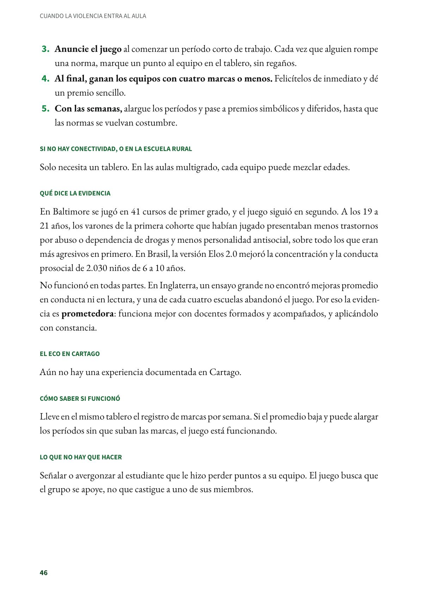

Convertir las normas en un juego de equipo: el Juego del Buen Comportamiento
Equipos, normas a la vista y marcas en el tablero para los primeros grados. Evidencia prometedora.
PDF · 3 págs. · 63 KBEn resumen
- Evidencia: prometedora.
- Para quién: Primeros grados de primaria (6 a 10 años). Sirve en cualquier área.
- Tiempo: Al comienzo, 10 minutos, tres veces por semana. Con el tiempo, períodos más largos.
- Materiales: Un tablero o una cartulina para las marcas y premios sencillos.
- De dónde viene: Estados Unidos (Baltimore), con una adaptación evaluada en Brasil (Elos 2.0).
Qué es
Una forma de organizar la clase en la que el curso juega, en equipos, a cumplir unas normas de convivencia escritas a la vista. No compite un equipo contra otro: todos los equipos que cumplen ganan.
Paso a paso en el aula
- Arme equipos equilibrados, con niños y niñas y con estudiantes inquietos y tímidos repartidos en todos.
- Escriba las normas en un cartel a la vista, en positivo: por ejemplo, estar en el puesto, hablar por turnos y prestar atención.
- Anuncie el juego al comenzar un período corto de trabajo. Cada vez que alguien rompe una norma, marque un punto al equipo en el tablero, sin regaños.
- Al final, ganan los equipos con cuatro marcas o menos. Felicítelos de inmediato y dé un premio sencillo.
- Con las semanas, alargue los períodos y pase a premios simbólicos y diferidos, hasta que las normas se vuelvan costumbre.
Si no hay conectividad, o en la escuela rural
Solo necesita un tablero. En las aulas multigrado, cada equipo puede mezclar edades.
Qué dice la evidencia
En Baltimore se jugó en 41 cursos de primer grado, y el juego siguió en segundo. A los 19 a 21 años, los varones de la primera cohorte que habían jugado presentaban menos trastornos por abuso o dependencia de drogas y menos personalidad antisocial, sobre todo los que eran más agresivos en primero. En Brasil, la versión Elos 2.0 mejoró la concentración y la conducta prosocial de 2.030 niños de 6 a 10 años.
No funcionó en todas partes. En Inglaterra, un ensayo grande no encontró mejoras promedio en conducta ni en lectura, y una de cada cuatro escuelas abandonó el juego. Por eso la evidencia es prometedora: funciona mejor con docentes formados y acompañados, y aplicándolo con constancia.
El eco en Cartago
Aún no hay una experiencia documentada en Cartago.
Cómo saber si funcionó
Lleve en el mismo tablero el registro de marcas por semana. Si el promedio baja y puede alargar los períodos sin que suban las marcas, el juego está funcionando.
Lo que no hay que hacer
Señalar o avergonzar al estudiante que le hizo perder puntos a su equipo. El juego busca que el grupo se apoye, no que castigue a uno de sus miembros.
Fuentes
Caetano, S. C., Mariano, M., da Silva, A. R., Mendes-Sousa, M. M., Ferreira, N. A., Cogo-Moreira, H., Mari, J. J. y Sanchez, Z. M. (2025). Effectiveness of the Elos 2.0 program, a classroom Good Behavior Game version in Brazil. International Journal of Mental Health and Addiction, 23(4), 2715–2731. doi.org
Education Endowment Foundation. (2018). The Good Behaviour Game [Evaluación del proyecto]. educationendowmentfoundation.org.uk
Kellam, S. G., Brown, C. H., Poduska, J. M., Ialongo, N. S., Wang, W., Toyinbo, P., Petras, H., Ford, C., Windham, A. y Wilcox, H. C. (2008). Effects of a universal classroom behavior management program in first and second grades on young adult behavioral, psychiatric, and social outcomes. Drug and Alcohol Dependence, 95(Supl. 1), S5–S28. doi.org
Kellam, S. G., Mackenzie, A. C. L., Brown, C. H., Poduska, J. M., Wang, W., Petras, H. y Wilcox, H. C. (2011). The Good Behavior Game and the future of prevention and treatment. Addiction Science & Clinical Practice, 6(1), 73–84. pmc.ncbi.nlm.nih.gov
Así se ve en el libro
3 páginas
